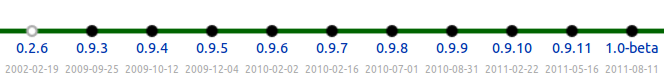

After 9 years of intense development, we are (almost!) ready to make our first official release: FEniCS 1.0. This is marked by the recent release of FEniCS 1.0-beta. FEniCS 1.0-beta is the result of a joint research project for the development of innovative concepts and tools for automated scientific computing.
Over the years, our focus been as much on the development of efficient implementations (backends) as on the design of an intuitive and automated problem solving environment for the solution of partial differential equations. As a result, the FEniCS user interface has evolved over the years, which has led to some frustration among users when applications need to be rewritten to match an evolving interface. But more importantly, the result is a now matured and polished user interface that we believe provides a much improved experience for FEniCS users. We feel confident that the interface has converged and we are ready to release FEniCS 1.0. This does not mean that the interface will remain constant forever, but we will think twice before making any disruptive changes to the interface!
# Define variational problem
a = dot(grad(u), grad(v))*dx
L = f*v*dx
# Compute solution
u = Function(V)
solve(a == L, u, bc)
Over the last couple of years, we have also worked hard to add an important missing piece to the FEniCS Project: good documentation. We can now provide an extensive tutorial, detailed API documentation and a range of documented demos. In addition, we have recently completed the work on a 700-page book that documents the methodology behind the FEniCS Project and highlights a number of applications in computational science based on FEniCS.

Installation of our software remained a challenge for many years, in part due to the large number of third-party libraries that the FEniCS software depends on. We therefore made ease of installation a high priority and we can now offer prebuilt binaries for GNU/Linux (Debian and Ubuntu), Mac OS X and Windows, as well as an automated installation script for other platforms.
After the release of 1.0-beta, users can expect a release of 1.0-rc1 and, perhaps, 1.0-rc2, before the release of 1.0. An exact release date cannot be promised as it depends on how long it takes for us to fix remaining bugs. Remember that we are all scientists who work on FEniCS in between writing papers and referee reports, teaching courses and supervising students. Follow the road towards 1.0.
After the release of 1.0, we look forward to adding new and exciting features to FEniCS. Items of current interest include improved (and optimized) support for parallel computing, improved adaptive mesh refinement (and coarsening), improved support for computing on non-matching overlapping meshes, and automated discretization of ODEs and time-dependent PDEs.